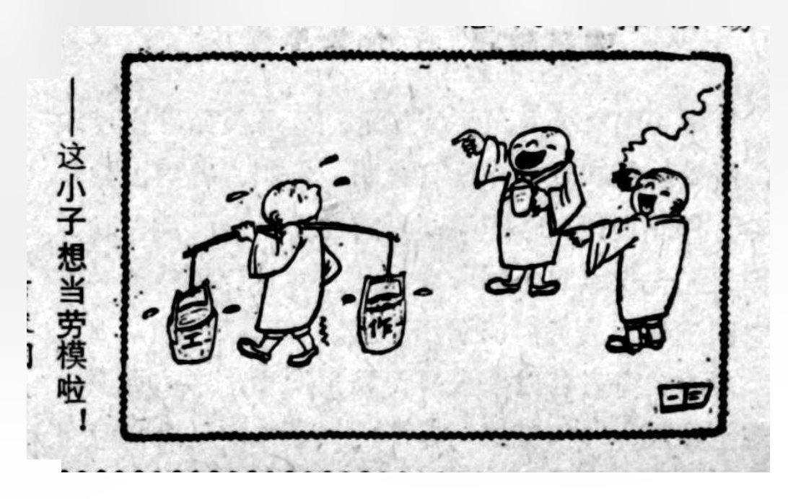

佚名 《人事》1989年第11期（总第50期），第37页
这小子想当劳模啦
This Kid Wants to Be a Model Worker
- Caption
- ——这小子想当劳模啦！
—This kid wants to be a model worker! - Text in the drawing
- 工 / 作
Work (one character on each bucket) - Description
- A young monk sweats under a carrying pole with two water buckets that together spell “work,” while two older monks point and laugh at him.
- Note
- The proverb: one monk carries water alone, two carry it together, three have none to drink. Here the willing worker is mocked by the idle.
- Artist
- Unattributed 佚名
- Published in
- 《人事》1989年第11期（总第50期）, p. 37
- Themes
- Envy of talent · Fable, legend and history

Cite
Unattributed, “这小子想当劳模啦” [This Kid Wants to Be a Model Worker], Renshi (Personnel) 《人事》, 1989, no. 11, p. 37.